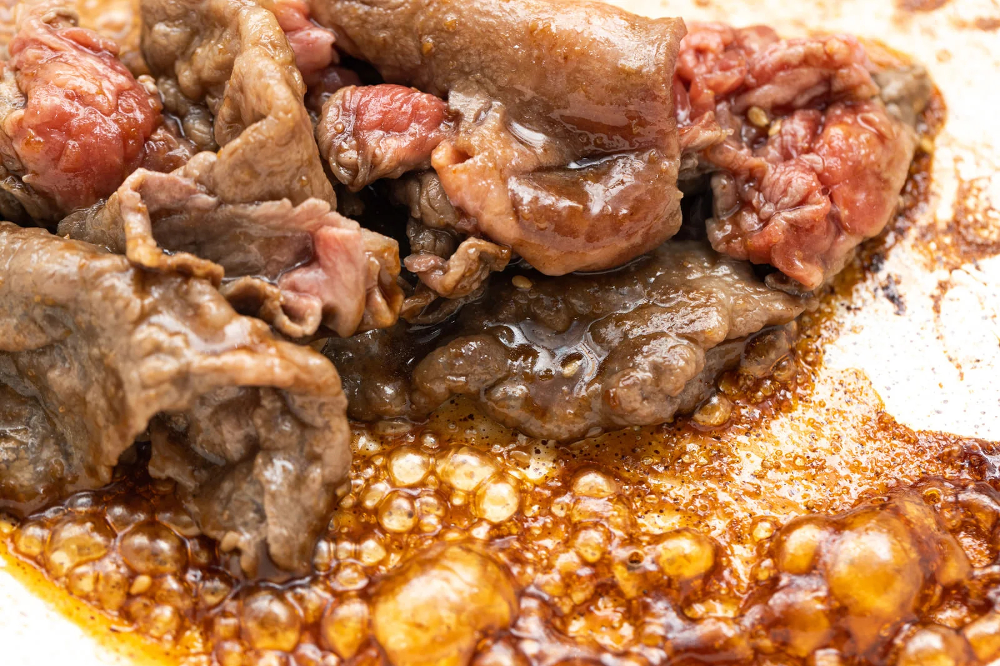

山形名物＊ままだま焼き☆

山形県の郷土料理！とってもおいしい牛肉の「ままだま焼き」のレシピです。
（その方が絶対おいしいですよ）
材料（2人前）
- 牛スライス300g
- しらたき1袋
- えのき1パック
- 醤油大さじ3
- 酒大さじ4
- みりん大さじ4
- はちみつ大さじ1
- 和風だし小さじ山盛り1
- ごま油大さじ2
- 片栗粉適量
- いりごま適量
作り方
-
1ごぼうは食べやすい大きさに切って水にさらす（数分程度）

-
2厚揚げを等分し、豚バラ肉を巻きつける

-
3（2）に片栗粉をまぶす

-
4鍋にごま油（分量の半分）を熱して、ごぼうに火が通るまで炒める

-
5ごぼうを取り出し、残ったごま油で(3)を転がすように焼く

-
6全面に焼き色がついたら、醤油・酒・みりん・はちみつを加えて転がしながら弱火で煮立たせる。ふつふつしてきたら火を弱め、蓋をして10分煮る。

-
7皿に盛っていりごまを振りかけて完成

たべレポ（みんなのたべたよ報告レポート）
--件
＊ゆめか＊
2014年2月21日
おすすめに出てきたので初めて作ってみました！懐かしい味でほっこりしました。
ありがとうございます☆ミ
主婦一年生
2014年2月25日
ごぼうが無かったので、人参で彩りを加えてみました！子供も喜んで食べました♪
レシピ通りに作ってください
匿名希望
2014年3月2日
のこさず食べました！
ろく人前を一気に作りましたが
わたしの分も息子に食べら
れちゃうくらい大人気！皆
ルンルンだったのでまた
食べようとと思います！
うますぎて
なけてきた
ありがとうございます！またぜひ召し上がってくださいね☆ミ
肉好きパパ☆
2014年3月10日
酒のアテに最高ですね。初めて作りましたが、濃いめの味付けがたまりません。
ありがとうございます！お酒も進みますよね☆ミ
みらい
2014年4月5日
レコメンドで流れてきて気になったので初挑戦。ハチミツが切れていたのでお砂糖で代用しました。コクがあって美味しかったです！
レシピ通りに作ってください